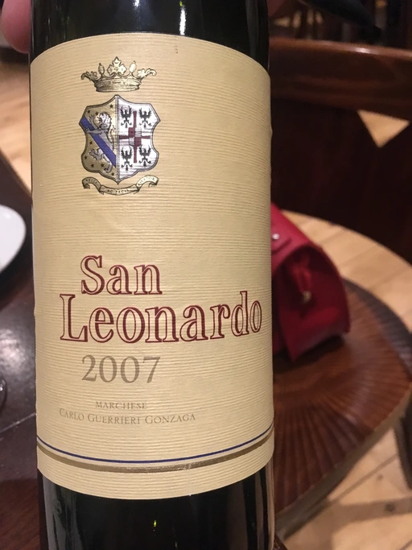

- Type
- Red Still, Dry
- Producer
- San Leonardo
- Vintage
- 2007
- Location
- Italy, IGP Vigneti delle Dolomiti
- Grapes
- Cabernet Sauvignon, Cabernet Franc, Merlot
- Alcohol
- 13
- Sugar
- 0
- Price
- 1650 UAH
- Cellar
- N/A
Ratings
2019-11-21 - 9.00
Chocolate, prune, meat, earth, vanilla. Medium-low acidity, round and mature tannin, long aftertaste. Full bodied. Drink now!